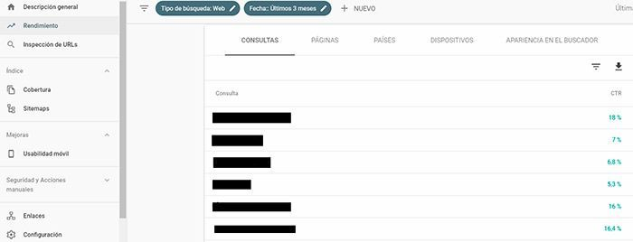

¿Qué es el Copywriting y por qué debes utilizarlo en tu negocio en Internet?

Hasta hace muy poco tiempo, hablar de copywriting era como hablar del chino mandarín. Muy pocos sectores sabían de qué se trataba, y para el común de los mortales era un término del que literalmente “nunca habían oído hablar en su vida”.
Por eso, que en estos dos últimos años se haya puesto tan de moda en el mundo del marketing digital, donde ya se encuentran incluso ofertas de trabajo como copy o redactor digital, me llena de satisfacción.
Sin embargo, esto no siempre es así. En ocasiones, entran en resultados de búsqueda que no están en primera posición por diferentes motivos: es una web que ya conocen, es una web popular, en la descripción aparece lo que ha buscado en negrita, en el título aparece el año actual, etc.
¿Qué es el Copywriting? Definición
El copywriting es una palabra anglosajona (aunque fueron los americanos en sus agencias de comunicación los primeros en acuñar este término) que realmente no tiene traducción al español (por desgracia para nosotros ¬¬) y que definimos como técnicas de redacción o escritura persuasiva.
Dos connotaciones importantes antes de seguir:
- Hacer copywriting no es escribir textos bonitos: Y esto os lo cuento porque me ha pasado en más de una ocasión que llega un cliente y me dice… -Ay, ¿por qué no me escribes unos textos chulos y bonitos para mi web?- Ya os digo que eso no es copywriting.
- Hablamos de técnicas: Es decir, se aprenden. Escribir lo puede hacer cualquiera. Nos enseñaron en el colegio, en la universidad… Pero escribir con una intención y lograrlo (escribir para vender) requiere de una serie de conocimientos, técnica, experiencia… Y esto señores, no lo puede hacer cualquiera.
¿Por qué está tan de moda el copywriting en el mundo del marketing digital?
En estos dos últimos años el copy se ha puesto de moda. Al menos en el sector del marketing digital.
En el mundo digital todo se dice con palabras… Es un enorme escaparate abierto 24 horas al día y 365 días al año. No hay dependientes, no hay comunicación no verbal ni se genera la confianza de la misma manera. Al no tener contacto humano, las palabras cobran un significado muy importante. Y esto solo puede ir a más.
¿Cómo puede ayudarte el copywriting en tu negocio en Internet?
Creo que si has llegado hasta aquí te habrá quedado un poco más claro qué es el copywriting y supongo que ahora te estarás preguntando… Muy bien belleza, pero ¿cómo pueden estas técnicas de redacción persuasiva ayudarme en mi negocio digital?
Creo que si has llegado hasta aquí te habrá quedado un poco más claro qué es el copywriting y supongo que ahora te estarás preguntando… Muy bien belleza, pero ¿cómo pueden estas técnicas de redacción persuasiva ayudarme en mi negocio digital?
- El copy te ayudará a diferenciarte de tu competencia: ¿Tienes un negocio en Internet? Pues a no ser que tu negocio sea algo único y totalmente innovador (enhorabuena si es así) seguro que hay otras 500 personas que hacen lo mismo que tú. ¿Cómo destacar entonces? Tienes que aportar algo diferente, una propuesta de valor con la que brilles frente a tu competencia. El copywriter indagará entre las entrañas de tu negocio y buscará hasta conseguir ese “algo” que tan solo tú tienes, para hacerlo ver a tus clientes diferenciándote de los demás. Te sacará fuera del rebaño.
- Generar confianza: ¿Comprarías algo a un completo desconocido? Entonces… ¿por qué pretendemos que nos compren a nosotros en Internet? Con las técnicas de copywriting vamos a tratar de minimizar esas objeciones que el posible cliente tiene, resolviendo dudas y convenciéndoles de que lo que les estamos ofreciendo merece realmente la pena. Se trata de romper esas barreras que el medio digital interpone. Necesitamos generar confianza en nuestros compradores o no lograremos vender ni una cerilla.
- Aporta valor a tu marca: Me encanta esta afirmación “aportar valor”. He visto muchos casos de negocios que para intentar vender más, ofrecen sus servicios a cuatro perras. Esto es un grave error.
Nunca jamás infravalores tus productos o servicios. Si eres capaz de hacer ver al cliente el verdadero valor que tienen, nunca más tendrás que volver a malvenderte. Y en esto el copywriting puede ayudarte muchísimo.

¿De qué depende el CTR en el SEO?
Hay muchísimos factores que influyen en el número de clics de un resultado de búsqueda. Un pequeño cambio en el title o en la metadescription puede incrementar muchísimo el CTR pero también puede bajarlo si quitas algo llamativo.
Entre todos esos factores, los más influyentes son:
- El title.
- La url / Migas de pan.
- La metadescription.
- Los rich snippets.
- La fecha.
Abre desde aquí tu Google Search Console, en el menú pulsa en Rendimiento, en el gráfico selecciona CTR medio y listo.
Desde aquí podrás ver el CTR tanto en el gráfico como justo debajo por Consultas (las keywords que usan los usuarios para encontrarte), por Páginas, por Países, Dispositivos y Apariencia en el Buscador.
